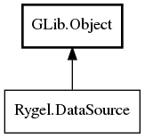

DataSource
Object Hierarchy:

Description:
public interface DataSource : Object
Interface for all data streams provided by a #RygelMediaEngine.
When Rygel receives a HTTP request to stream a given file, it creates a RygelDataSource object for this new file and instructs the
RygelDataSource to begin streaming. The RygelDataSource object will duly pass this request on to the underlying media framework, which
will in turn pass streamed bytes back to the RygelDataSource object. The RygelDataSource passes these bytes to Rygel which adds them to
the response it sends to the original HTTP request received from the client.
The data source is responsible for providing the streamable byte-stream via its data_available signal. End-of-stream is signalled by the
done signal, while errors are signalled by the error signal.
Implementations should fulfil at least these requirements:
- It should support at least the file:// URI scheme.
- It should be able to stream any kind of binary data, regardless of the format.
RygelDataSource instances are provided by rygel_media_engine_create_data_source() which will return a derived #RygelDataSource that uses
a specific IO backend and/or multimedia backend to stream the multimedia data at the URI.
The derived RygelDataSource may provide additional API for use by the derived media engine. For instance,
rygel_media_engine_get_transcoders() may return derived #RygelTranscoder instances, and these may use that additional API in their
create_source() implementations, for instance to access resources or data structures of the specific multimedia backend.
Content:
Methods:
- public abstract void start (HTTPSeek? offsets) throws
Error
Start producing the data.
- public abstract void freeze ()
Temporarily stop data generation.
- public abstract void thaw ()
Resume data generation from a previous freeze call.
- public abstract void stop ()
Stop producing data. After calling stop(), calling start() should
produce data from the beginning and not resume streaming.
Signals:
- public signal void data_available (
uint8[] data)
Emitted when the source has produced some data.
- public signal void done ()
Emitted when the source does not have data anymore.
- public signal void error (
Error error)
Emitted when the source encounters a problem during data generation.
Inherited Members:
All known members inherited from class GLib.Object
- @new
- newv
- new_valist
- get_type
- get_class
- @ref
- unref
- ref_sink
- weak_ref
- weak_unref
- add_weak_pointer
- remove_weak_pointer
- @get
- @set
- get_property
- set_property
- get_data
- set_data
- set_data_full
- steal_data
- get_qdata
- set_qdata
- set_qdata_full
- steal_qdata
- freeze_notify
- thaw_notify
- dispose
- constructed
- notify_property
- connect
- disconnect
- add_toggle_ref
- remove_toggle_ref
- bind_property
- notify
- ref_count